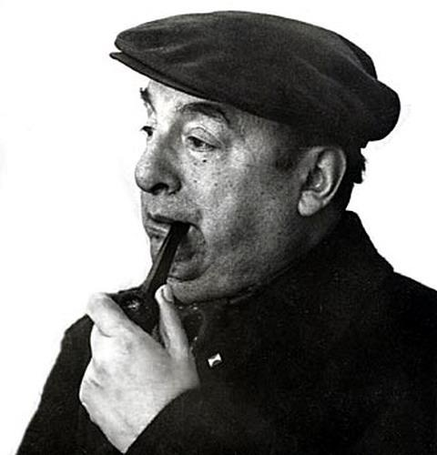

 |
Un halo de misterio envuelve la muerte de Neftal� Ricardo Reyes Basoalto, conocido universalmente como Pablo Neruda, nacido el 12 de julio de 1904 en la localidad chilena de Parral. Personaje lleno de luces y sombras, se dijo de �l que abandon� a su primera esposa y a su hija, nacida con hidrocefalia. Sin embargo, Neruda ha pasado a la historia como uno de los grandes poetas del amor, t�tulo que empez� a ganarse ya desde muy joven, cuando public� una obra que se ha convertido en inmortal: Veinte poemas de amor y una canci�n desesperada. |
Pablo Neruda fue criado por sus abuelos tras la repentina muerte de su madre dos meses despu�s de su nacimiento. Con 13 a�os public� su primer escrito en el peri�dico La Ma�ana de la ciudad chilena de Temuco.
A los 23 a�os, y con alg�n queotro conocimiento de ingl�s y de franc�s, aunque con escasez de recursos econ�micos, Neruda parti� a bordo del buque Baden rumbo a Rang�n, en Birmania, por aquel entonces parte del Imperio brit�nico. All� tom� posesi�n como c�nsul electo y de tercera clase en 1927.
|
Tras su paso por Argentina, Neruda march� a M�xico y m�s tarde viaj� a la URSS, China y otros pa�ses de la Europa del Este. Durante su periplo, Neruda escribi� una serie de poemas propagand�sticos que le valieron el Premio Lenin de la Paz. De nuevo en Chile, la poes�a dePablo Neruda dar�a un vuelco hacia la simplicidad y adquiri� una gran intensidad l�rica y un tono general de serenidad. La obra central de esa �poca fue Odas elementales, escrita entre 1954 y 1957. En 1956 se separ� de su segunda esposa, Delia del Carril, para unirse a Matilde Urrutia, que ser�a su compa�era de viaje hasta el final de sus d�as. |
|
El reconocimiento internacional a su trabajo tuvo sus frutos en 1971, cuando se le concedi� el Premio Nobel de Literatura. El a�o anterior, Pablo Neruda hab�a renunciado a la candidatura a la presidencia de su pa�s en favor de Salvador Allende, quien lo nombr� poco despu�s embajador en Par�s. |